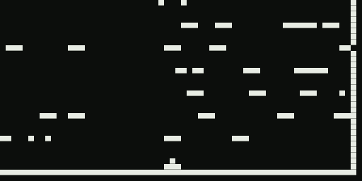
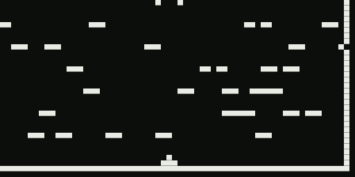

Touch Down
D. Toon · DREAMER no. 14 (1981-10) p. 17 1K RAM


Fly a powerless fighter back to the mother ship using only retro rockets. The navigation computer stops you whenever you release the thrust key and will not let you repeat or reverse the last move. Messages in bitmap text tell you how you did.
Keys
5 up, 8 left, A right, D down (first move sideways); 3 gives up.
Files
| File | Version | Load | Run |
|---|---|---|---|
| Touch Down.d68 | main | 0080-03FF | C000 |
Listing as transcribed (with notes): touch_down.txt
Source
DREAMER no. 14 on archive.org, p. 17 (PDF page 19). Author: D. Toon.
Corrections applied
None.
Open doubts
- Hand-written 9/4/6/1 keys on the scan ignored.
- Arrival at the mother ship was forced with a poke in the test.
- 0324 printed '1?54'; 1954 is the only value that draws the F of FOOT.